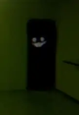

Appearance
The Partygoers are tall, gaunt humanoid figures wearing brightly coloured party attire — hats, streamers, oversized clothing — in a state of visible decay and distortion. Their proportions are wrong in ways that are difficult to specify: limbs slightly too long, heads slightly too large, movements that do not flow the way a human body should move. Their faces are wide and fixed in expressions of forced celebration.
Despite the festive appearance, nothing about them reads as joyful in person. Accounts consistently describe an overwhelming sense of wrongness — the visual information of a party and the instinctive understanding that this is not a party.
Behaviour
Partygoers inhabit Level Fun almost exclusively, though rare reports place them in other levels during specific events. Within Level Fun, they are persistently present and actively hunt wanderers. They communicate with each other through sounds described as distorted laughter, off-key music, and the noise of party horns — all slightly too slow or too fast to be right.
They pursue wanderers relentlessly once aware of their presence. They do not tire. They do not lose interest. The pursuit in Level Fun is documented as lasting until the wanderer is either caught or exits the level. Their coordination with one another is notable — they appear to have a shared awareness of a target's location even when individually out of range.
There is no documented method of appeasing or distracting a Partygoer. They do not respond to food, sound, or light in the way other entities do. The only reliable survival strategy within Level Fun is to exit it as quickly as possible.
Biology & Notes
Level Fun is itself anomalous — a brightly lit, heavily decorated level that disorients wanderers through cheerful aesthetics at odds with its extreme danger. The Partygoers appear to be native to or generated by that level's properties. Whether they exist outside it as independent entities or are a manifestation of the level itself is not resolved.
No Partygoer has ever been documented to speak. The sounds they produce are environmental rather than communicative.
⚠ Survival Protocol
Do
- Exit Level Fun by any available means immediately
- Move quickly and quietly toward any exit
- Avoid making noise that confirms your location
- Document your entry point for others
Do Not
- Attempt to communicate with or reason with one
- Slow down for any reason once pursuit has begun
- Re-enter Level Fun without preparation
- Assume the pursuit has ended